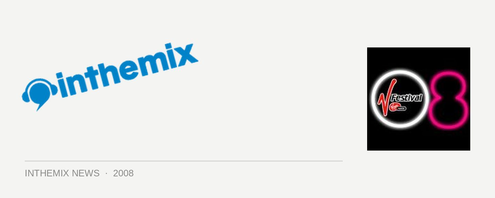

V Festival lifts curtain on 2nd announcement
After wowing audiences in Sydney and Queensland last year, the V Festival will be taking it national in 2008. And while The Pixies were the drawcard headline act of the inaugural event, this year it’s 90s heroes the Smashing Pumpkins who will be at the top of the bill along with Queens of the Stone Age, Duran Duran and more. And now ITM can reveal the second round of acts that have been added to the bill…
For more information on the upcoming V Festival check out out Full Coverage page, and have a look at the next round of bands that have been added to the lineup…
Modest Mouse
Roisin Murphy
Hot Hot Heat
The Rakes
Cut Copy
Glass Candy
Doom & Hoodrat
Munk
Flosstradamus
Mike Simonetti
Andee Van Damage